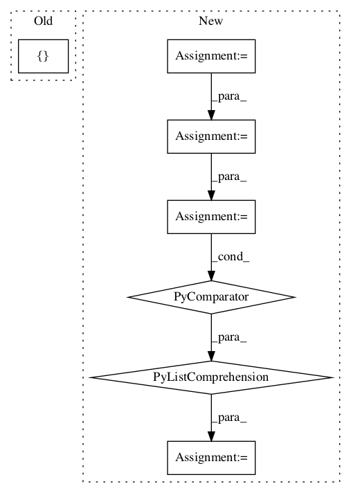

9c51193d4203f796c2adeca69b29a4ea168d7ceb,deepchem/models/tensorgraph/models/gan.py,GAN,predict_gan_generator,#GAN#Any#Any#Any#Any#,440
Before Change
for layer, value in zip(self.conditional_inputs, conditional_inputs):
batch[layer] = value
return self.predict_on_generator(
[batch] , outputs=self.generators[generator_index])
def _set_empty_inputs(self, feed_dict, layers):
Set entries in a feed dict corresponding to a batch size of 0.After Change
batch_size = len(conditional_inputs[0])
if noise_input is None:
noise_input = self.get_noise_batch(batch_size)
inputs = [noise_input]
inputs += conditional_inputs
inputs = [i.astype(np.float32) for i in inputs]
pred = self.generators[generator_index](inputs, training=False)
if tf.executing_eagerly():
pred = pred.numpy()
else:
pred = pred.eval(session=self.session)
return pred
class WGAN(GAN):In pattern: SUPERPATTERN
Frequency: 3
Non-data size: 7
Instances Project Name: deepchem/deepchem
Commit Name: 9c51193d4203f796c2adeca69b29a4ea168d7ceb
Time:
Author: null
File Name: deepchem/models/tensorgraph/models/gan.py
Class Name: GAN
Method Name: predict_gan_generator
Project Name: NifTK/NiftyNet
Commit Name: 2952f2a19f04cc3e3df9beb4a23eb9e1bd497753
Time:
Author: null
File Name: niftynet/network/se_resnet.py
Class Name: SE_ResNet
Method Name: layer_op
Project Name: NifTK/NiftyNet
Commit Name: 2cde5402070962026283b186a6b871066de7d2d3
Time:
Author: null
File Name: niftynet/network/resnet.py
Class Name: ResNet
Method Name: layer_op